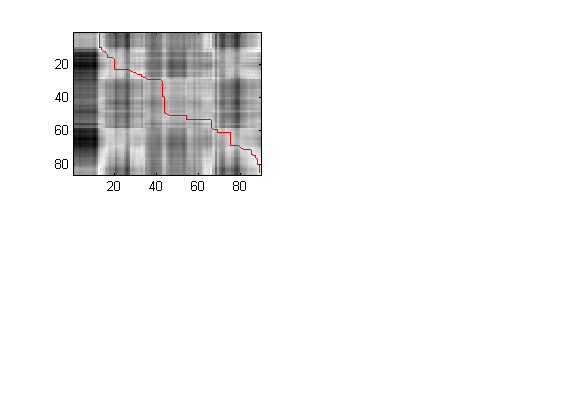
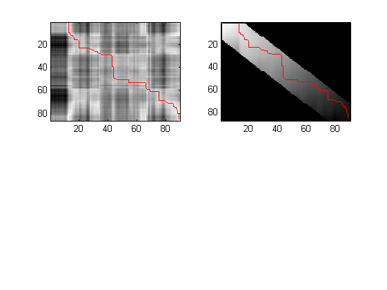
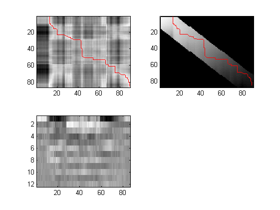
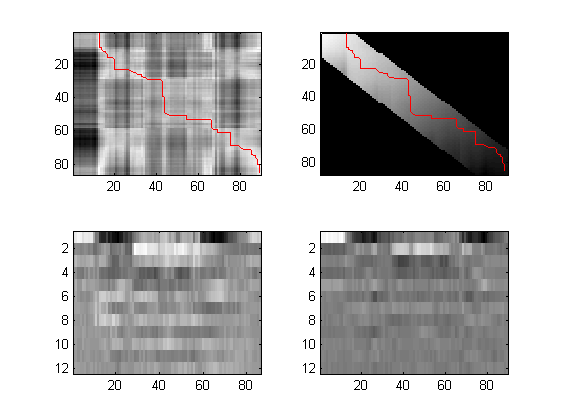

WAVCOMPARE
A MATLAB demo of Dynamc Time Warping distance based on Mel Frequency Cepstral Coefficients feature extraction.
ARGUMENTS: - audioFile1: [string] the path of WAV file 1 - audioFile2: [string] the path of WAV file 2 - debugMode: [optional] 0 = No (default) | 1 = Yes
OUTPUTS:
- minimumDistance: minimal time normalized DTW distance between feature
matricesl
- d: local distance matrix
- g: global distance matrix
- path: optimal assignment between the individual vectors
sequence A and B (where A and B are feature vectors
matrices)
- mfccA, mfccB: extracted feature matrices for input WAV filesContents
- Copyright (C) Luca Lorusso 2014 - Sapienza Universita' di Roma
- Initializing data
- Loading sounds from WAV files
- Removing silence from the signal
- WAV files Mel Frequency Cepstral Coefficient calculation
- debugMode ON: listen WAV files
- debugMode ON: show local distance matrix
- debugMode ON: show global distance matrix
- debugMode ON: show feature 1 data
- debugMode ON: show feature 2 data
Copyright (C) Luca Lorusso 2014 - Sapienza Universita' di Roma
DETECTVOICED is a MATLAB function from SILENCEREMOVAL, a method for silence removal and segmentation of audio streams that contain speech. Home page: http://www.mathworks.com/matlabcentral/fileexchange/28826-silence-removal-in-speech-signals
DTW is a MATLAB function from MATCHBOX, a prototype which applies Dynamic Time Warping on MFCC features in order to compare two spoken words for similarity. Home page: https://github.com/hfink/matchbox/tree/master/matlab
MELCEPST is a MATLAB function from VOICEBOX, a library for speech processing. Home page: http://www.ee.ic.ac.uk/hp/staff/dmb/voicebox/voicebox.html
Initializing data
function [minDistance, d, g, path, mfccA, mfccB] = wavCompare(audioFile1, audioFile2, debugMode)
if nargin < 3 debugMode = 0; end if nargin < 2 error('Please specify 2 WAV files to compare! - one by argument'); end; window_size = 15; % WHAT IS THE BEST VALUE?
Loading sounds from WAV files
[wavSignal1,sampleRate1] = audioread(audioFile1);
[wavSignal2, sampleRate2] = audioread(audioFile2);
Removing silence from the signal
wavSignal1 = detectVoiced(wavSignal1, sampleRate1);
wavSignal2 = detectVoiced(wavSignal2, sampleRate2);
WAV files Mel Frequency Cepstral Coefficient calculation
[mfccA] = melcepst(wavSignal1, sampleRate1);
[mfccB] = melcepst(wavSignal2, sampleRate2);
[minDistance, d, g, path] = dtw(mfccA', mfccB', window_size);
debugMode ON: listen WAV files
if debugMode == 1
fprintf('Listen to them together... '); if length(wavSignal1) < length(wavSignal2) wavSignal1(end : length(wavSignal2)) = zeros(); else wavSignal2(end : length(wavSignal1)) = zeros(); end soundsc(wavSignal1+wavSignal2, sampleRate1); fprintf('Plotting data.\n');
Listen to them together... Plotting data.
debugMode ON: show local distance matrix
subplot(221);
show_distance_matrix(d, path);
 debugMode ON: show global distance matrix
subplot(222);
show_distance_matrix(g, path);
 debugMode ON: show feature 1 data
subplot(223);
show_mfcc_data(mfccA');
 debugMode ON: show feature 2 data
subplot(224);
show_mfcc_data(mfccB');
 end
end